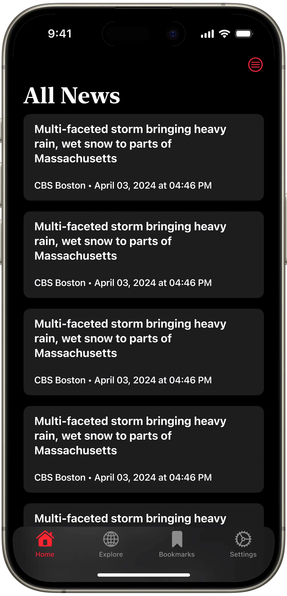
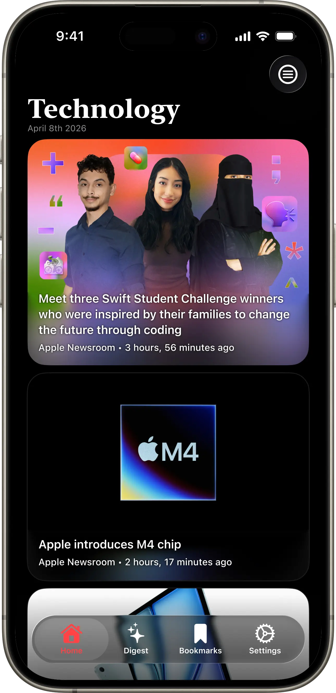

Original Ruby card design vs new design:


With the article card redesign in early 2025 for Ruby, my client Michael Burkhardt's app, I was given full creative control in making the article card look more modern for iOS 26. In order to make the image basically fill the space of the entire article card, without text covering the image, I used a mirrored image and added progressive blur. I also made it so there is less information given, only telling the user how long ago the article was posted. The news organization title is also now part of the caption rather than the title. This image mirror with progressive blur trick is something Apple does in Apple TV and Apple Music, so I believe this helps Ruby look and feel more native to the platform. When Michael first attempted to build my design he attempted to manually mirror the image and add progressive blur. However, the backgroundExtensionEffect() modifier was later introduced which gave the public access to this effect. Michael used this effect for his implementation of my design alongside his big update to Ruby for iOS 26.
You can checkout Ruby here! If you would like to read more about Ruby and its big update for iOS 26, you can learn more about it here on this Twitter thread.